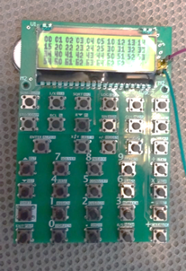

Hardware
Version 0.0.5 is fully functioning with a few minor hardware bugs which will be corrected in the next version.
Hardware Bugs in 0.0.5
- 1. The MCU cannot enter powerdown mode through software because the power down button is not connected to a pin that supports wake-up from powerdown.
- 2. The pads for the reset and BOOT0 buttons do not match the actual buttons, which makes them unusable.
Development Timeline
- 07/06/2024Started designing PCB
- 07/29/2024
Completed PCB 0.0.4, and ordered PCB through JLCPCB

- 08/04/2024Used Raspberry PI Zero 2W and ESP32-S3 to display Free42 on the LCD screen used in the calculator
- 08/05/2024Began assembling and testing
- 08/11/2024STM32 communicates through micro USB port for the first time
- 08/11/2024Test code is executed on the microcontroller, showing that all buttons and the LCD are working correctly
- 08/21/2024STM32 can read and write to Flash drive through QSPI interface
- 08/21/2024Set up basic command line interface over USB VCP to make debugging easier, and created "frw" (flash read-write tool) to control flash
- 12/10/2024Completed 0.0.5 and ordered PCB with SWD port
- 01/22/2025Ran Free42 on RP42